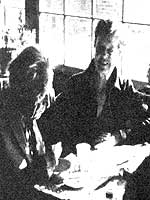

As we've noted several timer in these pages, Helen and Scott Nearing are light years ahead of most of us when it comes to getting bark to the land and living a life of voluntary simplicity. As well they should be, sine they originally homesteaded a run-down farm in Vermont's Green Mountains away bark in the autumn of 1932.
Life was good for the Nearings on that mini-farm . . . until the slopes around them exploded into ski resorts in the early 50's, forcing Helen and Scott to move on to a rocky inlet on the roast of Maine and start all over again.
And that's where you'll find the Nearings today: still clearing brush, still building honest stone houses (Helen and Scott are famous for their stone houses), and still raising most of their vegetarian diet themselves in unbelievably productive wholistic gardens . . . just as they're been doing for nearly 5O years.
Naturally (in more ways than one), the Nearings have learned a few things about homesteading and getting bark to basics over the years. And, lucky for all of us, they've agreed to share some of that knowledge with MOTHER's readers in a regular question and answer column. If you'd like to get in on the action, send your question or questions about self-sufficient living on the land to Helen and Scott Nearing, THE Mother Earth News(restricted), P.O. Box 70, Hendervonville, N.C. 28739. And please don't expect personal replies to your queries. The most important and most frequently asked questions will be answered here-and here only-where we all can read what the Nearings have to say.
I would very much enjoy having the opportunity to hear you people speak. Do you ever give lectures around the country . . . and-if so-could you perhaps use your column to notify interested parties (well in advance, if possible) when and where such talks will be held?
It's difficult to be quite sure, in advance, just where we'll be and when. We usually stick close to the farm and only leave when it really seems necessary.
We did speak in southern Quebec this spring at a bilingual conference on Agriculture Biologique (we had only one month's notice on that) . . . we recently gave a talk at the 100th anniversary of the founding of the Holderness School in Plymouth, New Hampshire . . . and we appeared on radio and TV to publicize our new book-Continuing the Good Life-in May.
Our first engagement after this issue of MOTHER is published will be July 31 to August 3 . . . when we'll speak to the American Natural Hygiene Society at the University of North Carolina. (Write to Frieda Kabelac, 36790 Harper Street, Mt. Clemens, Michigan 48043 for details.) Then, on August 11 and 12, we'll attend the Bread and Puppet Theatre Annual Circus in Glover, Maine. (Interested parties can contact Peter Schumann at that address.) Finally, on Sunday afternoon, September 24, we will speak at the Common Ground Country Fair in Litchfield, Maine. (Details are available from Chaitanya York, Hallowell, Maine 04347.)
I've read in MOTHER that you're famous for your stone houses, and I'm interested in building one myself. How did you learn this construction method? And can you give me some helpful tips as to where to begin?
Read the chapter "We Build a Stone House" (pages 47-81) in our book Living the Good Life. There, we described our experience with stone building in Vermont. Our new volume, Continuing the Good Life, contains a couple of chapters on our stone wall and house building in Maine. [EDITOR'S NOTE: Living the Good Life ($2.95) and Continuing the Good Life ($9.95 in hard cover) are both available in many bookstores or-for the listed prices plus 95 cents shipping and handling-from Mothers Bookshelf, P.O. Box 70, Hendersonville, North Carolina 28739.)
In preparation for a stone construction operation, we collect a large supply of likely rocks and keep them in designated piles near the site. When we build, we select- from among these the ones suited for a particular job. Primarily, we look for good shapes and flat surfaces, and those that have neither of these characteristics are used for foundations and road fill. We don't cut any rocks.
Many, many thanks for your book . . . Living the Good Life. We're presently following your plans on rock building and compost bins.
Your article in MOTHER NO. 55 mentioned selling hybrid blueberries. Do you ever sell plants . . . or just the berries? I would be proud to have some of your "bushes" in my garden.
We're not in the business of selling blueberry plants. In order to do so, we'd have to have state licensing, inspection of plants before shipping, and so on. In any case, we keep our own small plants for replacement.
There are about 60 varieties of hybrid blueberries that have been developed over the last half-century. These include early, medium, and late-bearing plants . . . and should be chosen according to your local climatic conditions. Buy your plants from a regular nursery and don't purchase any over two years old.
In our newest book, Continuing the Good Life, there's a chapter on blueberry farming.
I read your column regularly and think that you two folks are amazing! You were into homesteading back before the rest of us knew it existed! You've done and are still doing-a great deal for the back-to-the-land, movement. I'm telling you of my admiration because I truly feel it . . . and also so you won't (I hope) think my question disrespectful. Here it is: The one thing about you two that concerns me is your apparent intolerance of people whose lifestyles vary even slightly from your own. I'm not suggesting you endorse pesticides, plutonium, or even pets. (I'm pretty intolerant of those first two things myself!) But I sometimes get the feeling that you think anyone who doesn't live exactly the way you do is doing something wrong! Do you, indeed, feel this way?
No, we don't believe that people who choose different lifestyles from our own are wrong. We recognize that no two people are exactly alike . . . either in their makeup or in their basic experiences. Therefore, no two individuals will react to a given lifestyle in exactly the same manner . . . so-naturally-we don't expect that our way of life will fit everybody. It's up to each individual to live his or her own life and for us to live ours.
We've worked out various ways of living . . . tried them out ourselves . . . and modified-or on occasion abandoned them. We wrote about our experiences in case anyone might be interested. We didn't want or ask for followers. People can take our practices or leave them.
In most cases the moral problem which you bring up in the words "wrong" or "right" is quite inapplicable. Take the protein question, for instance: Throughout our whole life this question has been discussed by people interested in dietetics and there's still no general agreement. We happen to stick to a low-protein diet, while others favor large amounts of this nutrient. It's not a case of right or wrong . . . we've just found what works best for us.
Some friends of mine won't grow any corn in their gardens . . . as they say it leaches all the nutrients out of the soil. What do you think?
We agree that corn is a heavy feeder. Therefore, the gardener must provide sufficient nutrients if he or she wants to grow such a crop. We always aim to put more "food" back into the land than we take out of it!
What kind of oil do you use for cooking and baking? And do you think butter is really bad for you?
We use olive oil in salads and safflower or soy for cooking. Butter is not necessarily "bad for you", but it's more appropriate for vegetarians (as Scott and I are) to use plant oils rather than animal fats.
|
 |
|
|